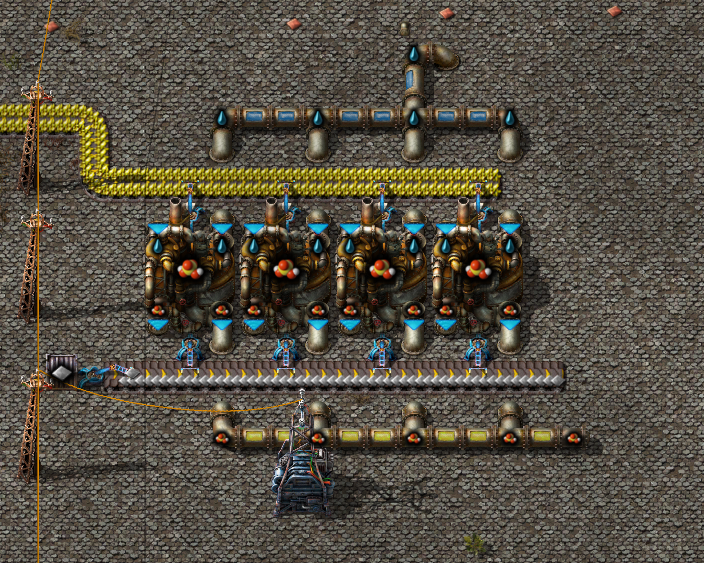
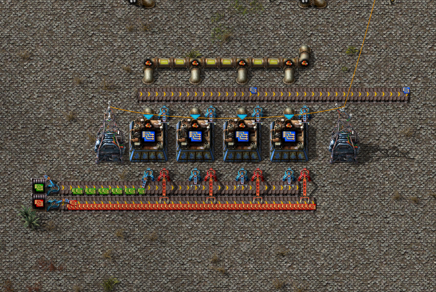
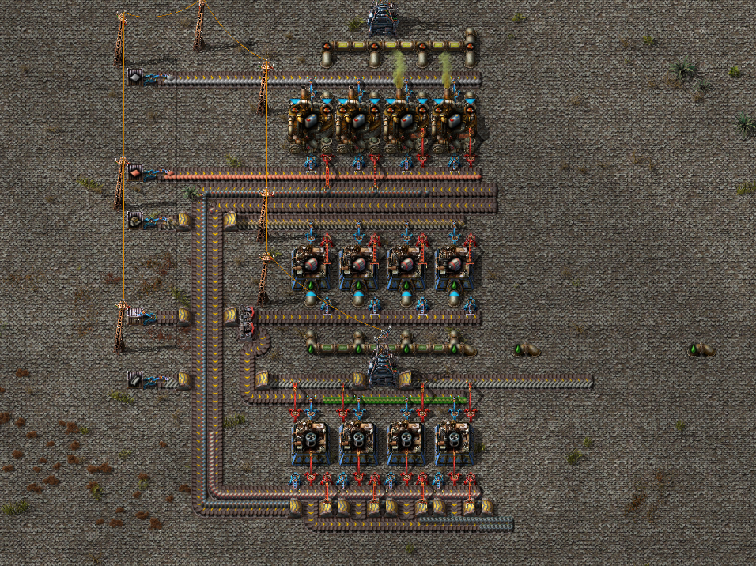
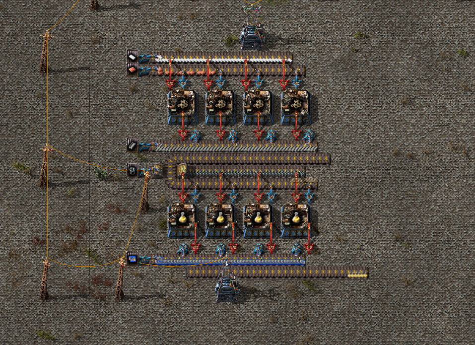

Жёлтые пакеты исследований

Серную кислоту можно будет делать по вот такой схеме, так же все трубы проложены в основном под землей для вашего же удобства.

Вот скриншот, на котором показано производство синих плат для создания в дальнейшем блоков управления ракетой.

На данном скриншоте вы можете наблюдать то, как расположены все элементы создания корпусов для ремонтных ботов и большей части полезных вещей на вашей базе.

Создание желтых пакетов. Далее вам ничего не мешает исследовать ракетную шахту и закончить игру!